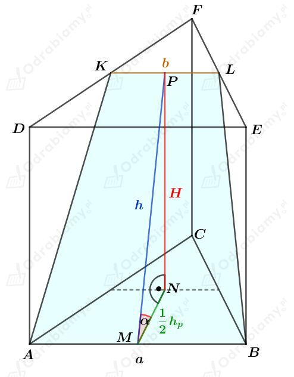
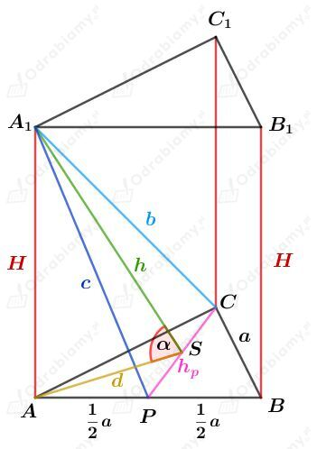
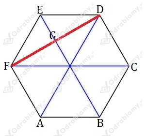

Rysunek:

Punkty K i L są środkami krawędzi - odpowiednio - DF i EF. Punkt P jest środkiem odcinka KL.
Skoro odcinek KL łączy środki ramion trójkąta, to
Obliczmy pole otrzymanego przekroju. Mamy:
Z treści zadania wiemy, że pole to wynosi a2, więc otrzymujemy:
Obliczmy połowę długości wysokości podstawy tego graniastosłupa. Korzystając ze wzoru na długość wysokości trójkąta równobocznego mamy:
Wyznaczmy cosinus kąta 𝛼. Mamy:
Rysunek:

Korzystając ze wzoru na długość wysokości trójkąta równobocznego mamy:
Korzystając z twierdzenia Pitagorasa dla trójkąta ACA1 mamy:
Obie strony równania są dodatnie, więc
Korzystając z twierdzenia Pitagorasa dla trójkąta APA1 mamy:
Obie strony równania są dodatnie, więc
Rozważmy trójkąt A1PC. Zauważmy, że
Na mocy twierdzenia odwrotnego do twierdzenia Pitagorasa dla trójkąta A1PC stwierdzamy, że ten trójkąt jest trójkątem prostokątnym.
Wiemy, ze pole trójkąta A1PC jest równe S. Mamy zatem
Wyznaczmy objętość tego graniastosłupa. Mamy:
Wiemy, ze pole trójkąta A1PC jest równe S. Mamy zatem
Korzystając z twierdzenia Pitagorasa dla trójkąta ASA1 mamy:
Obie strony równania są dodatnie, więc
Wyznaczmy cosinus kąta 𝛼. Mamy:
Odcinki FE1 oraz DE1 to przekątne ścian bocznych, więc są równej długości.
Niech H będzie wysokością tego graniastosłupa.
Korzystając z twierdzenia Pitagorasa dla trójkąta FEE1 mamy:
Obie strony równania są dodatnie, więc
Rysunek pomocniczy podstawy:

Korzystając z twierdzenia Pitagorasa dla trójkąta CFD mamy:
Obie strony równania są dodatnie, więc
Pole otrzymanego przekroju jest równe S, stąd mamy:
Niech 𝛼 będzie kątem, który płaszczyzna przekroju tworzy z podstawą.
Wyznaczmy cosinus kąta 𝛼. Mamy:
Korzystając z jedynki trygonometrycznej
mamy:
Zauważmy, że
Zatem otrzymujemy:
Wyznaczmy objętość tego graniastosłupa. Mamy: